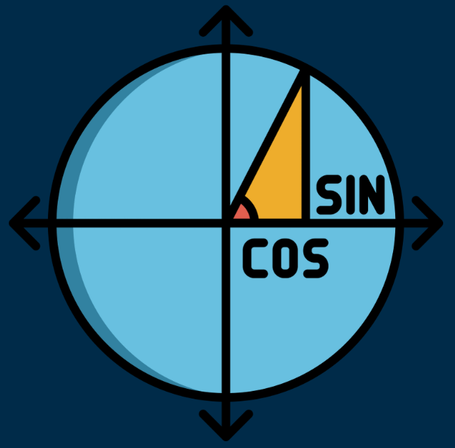

Trigonometría de Hiparco: 190-120 a.C.
Hiparco hizo una contribución temprana a la trigonometría al producir una tabla de cuerdas, un ejemplo temprano de una tabla trigonométrica. La trigonometría es la medición de los triángulos (del griego trigono y metrón).
Volver a la página principal